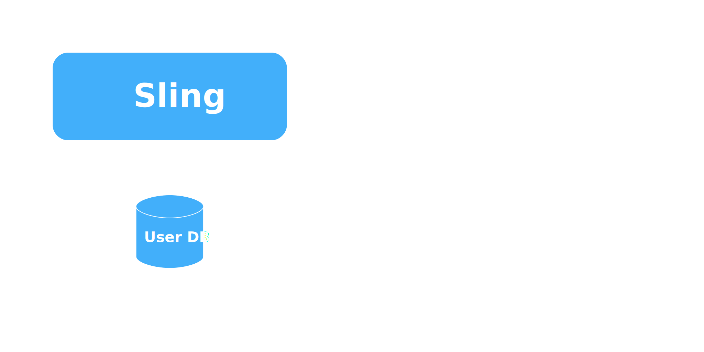
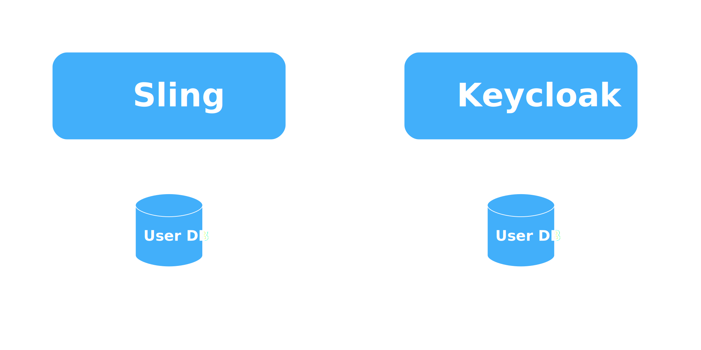
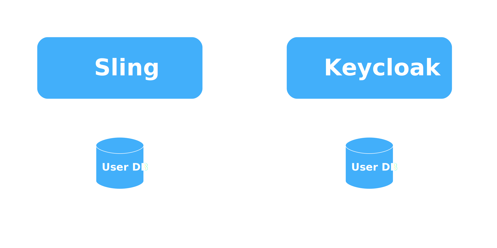
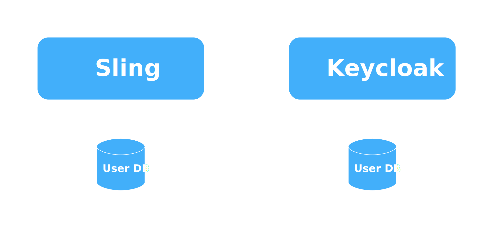
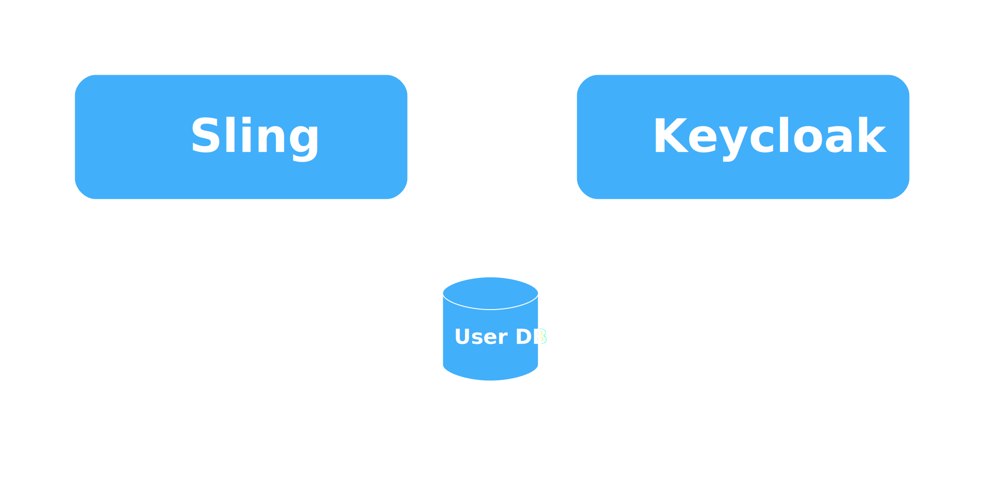

- Implemented by Apereo CAS
- JSON- or XML-based
- Backchannel required
- Suitable for all kinds of apps
Keycloak servlet filter
@Component(
immediate = true,
service = Filter.class,
property = {
CONFIG_FILE_PARAM + "=" + "keycloak.json",
SKIP_PATTERN_PARAM + "=" + "/public/.*",
HTTP_WHITEBOARD_FILTER_PATTERN + "=" + "/",
HTTP_WHITEBOARD_CONTEXT_SELECT + "="
+ "(osgi.http.whiteboard.context.name=org.apache.sling)"
})
public class KeycloakFilter extends KeycloakOIDCFilter { }
Keycloak Sling AuthenticationHandler
public class KeycloakAuthenticationHandler implements
org.apache.sling.auth.core.spi.AuthenticationHandler {
// ....
public AuthenticationInfo extractCredentials(
HttpServletRequest req, HttpServletResponse res) {
KeycloakSecurityContext ctx = (KeycloakSecurityContext)
req.getSession()
.getAttribute("org.keycloak.KeycloakSecurityContext");
return new AuthenticationInfo("KEYCLOAK",
"admin", "admin".toCharArray());
}
// ....
}
User provisioning? What is it?

User provisioning? What is it?

User provisioning? What is it?

Do I really need it?
| YES: |
NO: |
- You’re relying on the users’ existence in the underlying JCR;
- If you make heavy use of JCR ACLs.
|
- You connect the underlying DB using a service account;
- Access control is on the application level
- You’re OK to go with a single account for JCR
|
User provisioning: approaches

User provisioning: push
User provisioning: pull

User provisioning: shared store

Can I have push/pull now?
LDAP to the rescue (present)

 +
+
 +
+